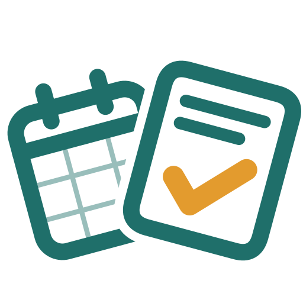

MissiplanRègle de confidentialité
Dernière mise à jour : 23 octobre 2026
Missiplan (anciennement Kolibri) est une application Android éditée par Dranece (« nous »). Cette page explique quelles données l’application utilise, où elles sont enregistrées et comment les supprimer.
1. Les données que vous saisissez
Pour fonctionner, Missiplan enregistre ce que vous y saisissez :
- vos missions : date, horaires, établissement, étape du suivi, montants estimés et payés ;
- les établissements : nom, mode de rémunération, taux horaire, distance, délai de paiement, contact et notes ;
- vos frais : date, montant, catégorie, libellé ;
- les documents que vous ajoutez : photos prises avec l’appareil photo ou fichiers choisis sur le téléphone (contrats, fiches de paie, factures, reçus) ;
- vos réglages, par exemple la puissance fiscale de votre véhicule.
Ces données sont enregistrées uniquement sur votre téléphone, dans l’espace réservé à l’application. Elles ne nous sont jamais envoyées.
2. Les autorisations du téléphone
- Appareil photo : seulement quand vous choisissez de photographier un document. Les photos restent dans Missiplan.
- Agenda : seulement si vous l’autorisez. Missiplan utilise l’agenda du téléphone, qui regroupe Google Agenda et les autres comptes que vous y avez ajoutés : il affiche la liste de vos agendas pour que vous choisissiez celui de vos missions ; quand vous ouvrez « Importer depuis l’agenda », il affiche les événements des 30 prochains jours pour que vous choisissiez lesquels deviennent des missions ; et, seulement si vous activez « Ajouter mes missions à l’agenda », il crée un événement pour chaque mission saisie dans Missiplan, le met à jour si vous modifiez la mission et le supprime si vous la supprimez. Une mission importée reste liée à son événement : si vous changez son horaire dans Missiplan, Missiplan change seulement la date et les heures de l’événement (jamais son titre ni ses notes), et il ne le supprime qu’avec votre accord. À l’inverse, si vous déplacez l’événement dans votre agenda, la mission suit. Missiplan ne touche à aucun autre événement. Ces changements sont ensuite synchronisés par le téléphone avec votre compte d’agenda, comme tout événement saisi sur le téléphone.
- Notifications : seulement si vous activez les rappels. Ils sont programmés sur le téléphone, sans aucun serveur.
3. Votre compte Google (facultatif)
Vous pouvez utiliser Missiplan sans compte Google. Si vous le connectez, l’application échange directement avec votre compte Google, depuis votre téléphone. Ces données ne transitent par aucun serveur de Missiplan et nous n’y avons pas accès. Voici exactement ce qui est demandé, et pourquoi :
| Accès demandé | Utilisation par Missiplan |
|---|---|
| Nom et adresse e-mail du compte | Afficher le compte connecté dans les réglages. |
Google Drive, fichiers créés par Missiplandrive.file |
Ranger une copie de vos documents dans un dossier « Missiplan » de votre Drive, et les récupérer sur un autre téléphone. Missiplan ne voit pas les autres fichiers de votre Drive. |
Google Drive, dossier caché de l’applicationdrive.appdata |
Enregistrer une copie de sauvegarde de vos données (missions, établissements, frais, liste des documents) pour les retrouver si vous changez de téléphone. Ce dossier n’est lisible que par Missiplan. |
L’utilisation et le transfert vers toute autre application des informations reçues des API Google respectent la Google API Services User Data Policy, y compris les exigences d’utilisation limitée (« Limited Use »). Les données Google ne servent qu’aux fonctions décrites ci-dessus. Elles ne sont ni vendues, ni utilisées pour de la publicité, ni lues par des personnes, ni utilisées pour entraîner des modèles d’intelligence artificielle.
4. Partage des données
Nous ne partageons, ne vendons et ne transmettons vos données à personne. Les seuls échanges sont ceux entre votre téléphone et votre propre compte Google, décrits ci-dessus, et seulement si vous le connectez. Les liens des fiches « Les règles, simplement » ouvrent des sites officiels dans votre navigateur, qui ont leurs propres règles de confidentialité.
5. Conservation et suppression
- Sur le téléphone : vous pouvez supprimer une mission, un frais ou un document à tout moment. Désinstaller Missiplan efface toutes ses données du téléphone.
- Dans Google Drive : supprimez le dossier « Missiplan » pour effacer vos documents. Pour effacer la sauvegarde cachée, ouvrez Google Drive sur un ordinateur, puis Paramètres → Gérer les applications → Missiplan → Supprimer les données d’application cachées.
- Dans votre agenda : les événements créés par Missiplan sont des événements ordinaires que vous pouvez supprimer. Vous pouvez aussi retirer à Missiplan l’accès à l’agenda dans les réglages du téléphone.
- Retirer l’accès : « Se déconnecter » dans les réglages de Missiplan, puis, pour révoquer entièrement l’accès, rendez-vous sur myaccount.google.com/permissions.
6. Vos droits
Comme nous ne détenons aucune de vos données, vous gardez la maîtrise complète de ce qui est enregistré : consulter, corriger et supprimer se font directement dans l’application, dans votre Google Drive et dans votre agenda. Pour toute question sur cette règle ou sur vos droits au titre du RGPD, écrivez-nous à dranece2+contact@gmail.com. Vous pouvez aussi adresser une réclamation à la CNIL (cnil.fr).
7. Enfants
Missiplan s’adresse aux professionnels de santé. Elle n’est pas destinée aux enfants.
8. Modifications
Si cette règle change, la nouvelle version est publiée sur cette page avec sa date. Si un changement concerne les données Google, l’application vous en informera avant de les utiliser autrement.